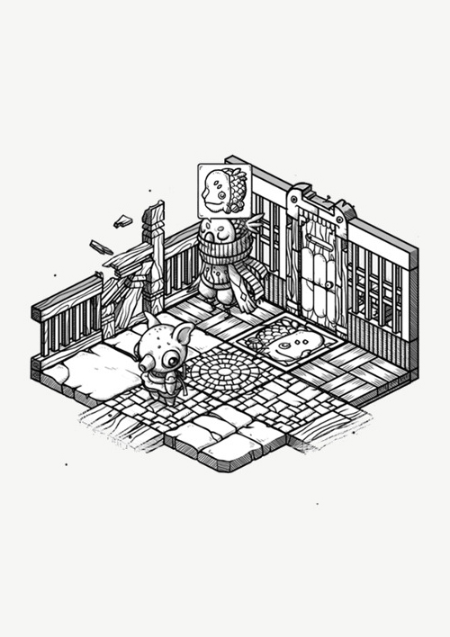
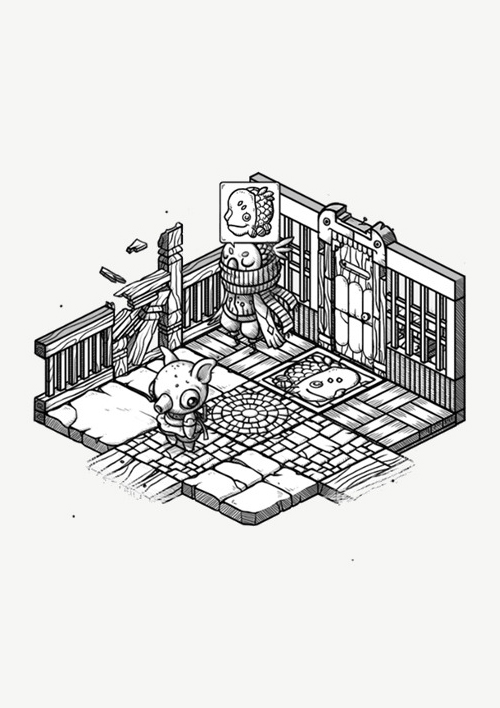
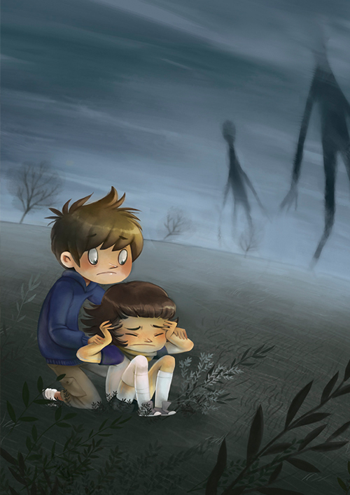
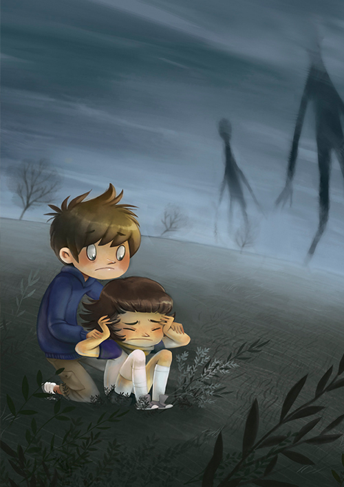

I am Rekka Bellum, an illustrator from Montreal, living on a small sailboat. I do art for games, childrens books and boardgames
My first game, Oquonie was nominated for an IGF award in 2015 for visual excellence.
I am co-creator of the traveling studio Hundred Rabbits, and manage a creative cooking blog called GrimGrains.
My past work experience include working in studio for Sava Transmedia, Pascal Blais animation, Hiberbum Creations, Tele Quebec and TonePlus animation studios. I have done contract work for Edoki Academy, Volta Creations and Scorpion Masque.
Email me at rekkabell @ gmail dot com for art-related inquiries. You can download my resume for a complete list of publications.


 

 



A novel I'm writing named Wiktopher, that will feature recipes, an illustrated glossary and recipes. Desert tales, told without gender.

I regularly make hand-drawn ink drawings of plants, fungi and other organic shapes. These drawings are unique, and made to order.

Markl is a game in which players must program their characters fighting style, to face various opponents in a battle happening too fast for humans to compete. I produce all of the artwork and animations of the game.